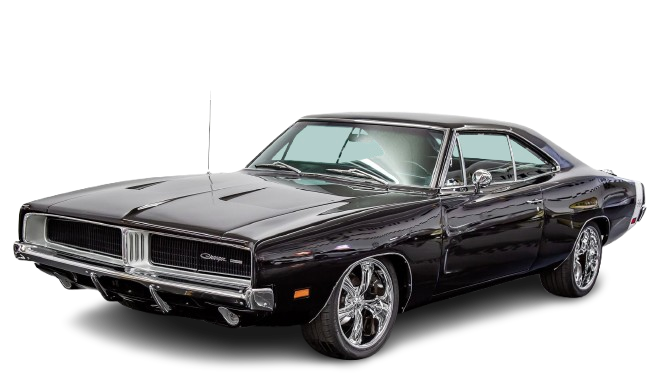
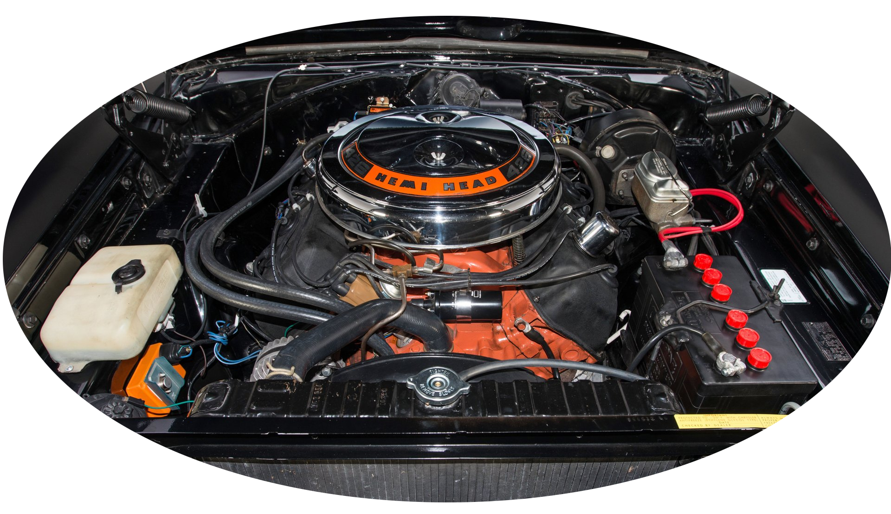

Az 1969-es Dodge Charger az amerikai izomautó-éra ikonja, amely a középen elválasztott hűtőmaszkjáról és a Hazárd megye lordjai sorozat „General Lee” autójaként vált világhírűvé. A modell versenypályára tervezett változata, a Charger Daytona volt az első autó, amely átlépte a 320 km/h-s sebességet a NASCAR-ban, így a típus ma a gyűjtők egyik legértékesebb kedvence.
A legerősebb változatokat a legendás, 7,0 literes 426 Hemi V8-as erőforrással szerelték fel, amely a félgömb alakú égéstereiről kapta a nevét. Hivatalosan 425 lóerős teljesítményével és brutális nyomatékával páratlan dinamikát nyújtott, ám ritkasága miatt a Hemi motoros darabok ma a legkeresettebb klasszikusok közé tartoznak.
| Autó | Motor | Teljesítmény |
|---|---|---|
| 1969 Dodge Charger | 7L 426 Hemi V8 | 317kW |
| 1970 Chevrolet Camaro Z28 | 5,7L LT-1 V8 | 268kW |